仅使用JSON指定的passive观看者gaze。统一标识为analysis_branch=observed_gaze、source=gaze、scope=real_all。结果针对已经逐原帧键核实的现存NPY关联和其原生video_ts时间轴。
权威JSON共122条观看记录：A35、C38、B33、D14、未知任务2；不纠正或猜测JSON中的任务。A/C候选73条，观看者技能为novice32、intermediate41；源操作者为novice45、intermediate28，二者不混用。45条A/C记录五项链接均存在。双novice筛选得到16条（A7、C9）、8名观看者、16个源视频。所有split均可纳入。A/C另外28条的stage、target及DLC链接缺失，且源技能不符合本次范围；逐项缺失重叠不能重复扣减。
| task | watches | observers | source_videos | valid_n | valid_s |
|---|---|---|---|---|---|
| A | 7 | 7 | 7 | 96223 | 2274.1700 |
| C | 9 | 8 | 9 | 79544 | 1822.0566 |
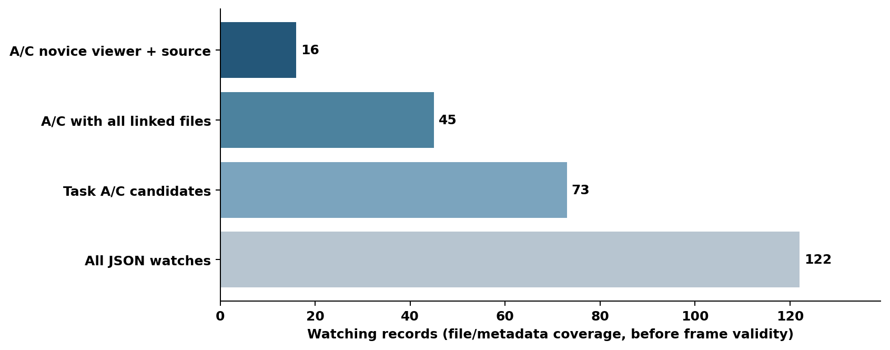
上述有效秒按规范原生video_ts计算，并非声称现场实际显示曝光时间。B/D及未知任务不进入分析；drop ring纳入时长严格为0。whole为四个纳入阶段的时间合并。
Task A：target占用（%）9.78 [5.92–13.63]，n=7；腕部邻域占用（%）4.40 [2.42–6.55]，n=7；C（%）72.04 [64.32–79.20]，n=7。直接切换率（次/有效分钟）0.04 [0.00–0.09]，n=7，经重叠切换率（次/有效分钟）0.00 [0.00–0.00]，n=7。区间为参与者bootstrap 95%区间，n为该指标观察者数。
Task C：target占用（%）8.69 [5.95–11.88]，n=8；腕部邻域占用（%）17.02 [12.25–22.13]，n=8；C（%）25.29 [16.47–33.98]，n=8。直接切换率（次/有效分钟）0.00 [0.00–0.00]，n=8，经重叠切换率（次/有效分钟）0.02 [0.00–0.05]，n=8。区间为参与者bootstrap 95%区间，n为该指标观察者数。
高C只表示T/P可分辨部分偏向target，不能直接解释为高target总占用；须同时报告D、L_target和重叠O。这里不进行观察者间、Passive与Active、观看者与源操作者的统计比较。
| task | stage | candidate_watches | candidate_observers | stage_frames | target_frames | gaze_frames | DLC_frames | valid_frames | valid_seconds | valid_watches | valid_observers | valid_fraction |
|---|---|---|---|---|---|---|---|---|---|---|---|---|
| A | reach ring | 7 | 7 | 36646 | 36091 | 36646 | 36646 | 36091 | 860.0673 | 7 | 7 | 0.9849 |
| A | grab ring | 7 | 7 | 13073 | 13073 | 13073 | 13073 | 13073 | 311.7230 | 7 | 7 | 1.0000 |
| A | transfer ring | 7 | 7 | 31424 | 31424 | 31424 | 31424 | 31424 | 743.4326 | 7 | 7 | 1.0000 |
| A | place ring | 7 | 7 | 15635 | 15635 | 15635 | 15635 | 15635 | 358.9471 | 7 | 7 | 1.0000 |
| C | reach string | 9 | 8 | 30917 | 25564 | 30917 | 30917 | 25564 | 575.5283 | 9 | 8 | 0.8269 |
| C | wrap around psm | 9 | 8 | 48168 | 47512 | 48168 | 48168 | 47512 | 1111.7486 | 9 | 8 | 0.9864 |
| C | pull through and cinch | 9 | 8 | 16066 | 3181 | 16066 | 16066 | 3181 | 55.7750 | 3 | 3 | 0.1980 |
| C | threading string through tower | 9 | 8 | 3287 | 3287 | 3287 | 3287 | 3287 | 79.0047 | 2 | 1 | 1.0000 |
这些是各条件的边际帧数；有效分析要求阶段、gaze、至少一个target槽位和双侧DLC同时可用。低覆盖阶段只能代表被观测部分，缺失时段不补零。target取有效point_1至point_5的均值，以未取整中心半径50px分类；PSM取左右DLC腕部/铰接点圆盘并集，不代表完整器械或jaw tip。T/P/O/N互斥，不可用帧保持-1。像素面积在像素中心计数、画面边界裁剪并对重叠去重。
低覆盖提醒：Task C的cinch仅3条观看、3名观察者有有效占用；threading仅2条观看、1名观察者，因此该阶段不生成均值置信区间。驻留等指标还可能因没有达到120ms的段而具有更少的可估人数，必须读取逐指标n，不能把候选8人当作有效8人。
dt在阶段切分前计算：仅原帧连续且0<Δt≤100ms的间隔两端各分一半；不向首尾外推，不跨缺帧补时长。occurrence、明确identity、缺帧/时间缺口和未纳入阶段切断序列。bitmask变化只审计，不视为物体身份切换。观察段≥120ms才纳入驻留中位数，达到阈值的截断段仍纳入并报告截断数。直接切换仅相邻合格T/P段；经重叠切换允许中间O不足120ms；不跨N或missing跳接。先记录内求段中位数，再在观察者内等权。
主条件Task A共2次合格直接切换、0次经重叠切换；Task C共0次直接、1次经重叠切换，事件很少。A的合格T/P/O驻留段分别331/136/46，其中截断20/7/0；C分别141/441/133，其中截断0/9/0。组驻留中位数的均值约为191–220ms，但各状态覆盖人数不同。零切换是当前有效观察支持下按预定规则检出的计数，不代表不存在其他形式的注意转移。
五条件全部运行：main 50/50、r25 25/25、r100 100/100、gripper100 50/100，均使用原始有效坐标；smooth为50/50，沿用原短缺口≤100ms插值、41Hz网格、居中3点平均及映回原生支持。主分析不重采样，target/DLC不平滑，smooth插补不进入main。不依据结果挑选半径。
whole的敏感性显示：A的C在等半径25/50/100px条件为70.24%/72.04%/69.73%，smooth为73.03%；仅扩大PSM至100px后C为28.35%。C任务相应C为24.83%/25.29%/26.92%，smooth为25.66%，gripper100为3.19%。占用本身随区域半径明显变化；C任务C_excess从r25的−6.17个百分点变为r100的+3.82个百分点，不能脱离区域大小解释偏好。smooth的C任务via_rate为约0.176次/有效分钟，高于main的约0.018，稀少切换对预处理敏感，不据此选择最佳条件。
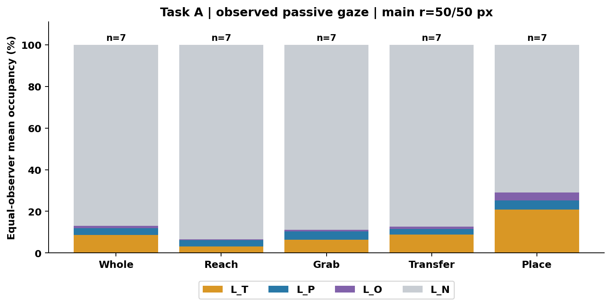
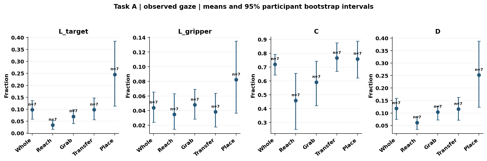
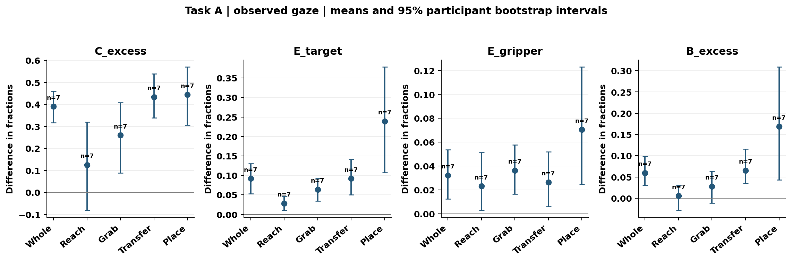
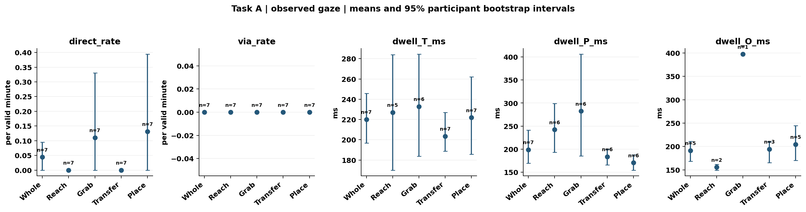
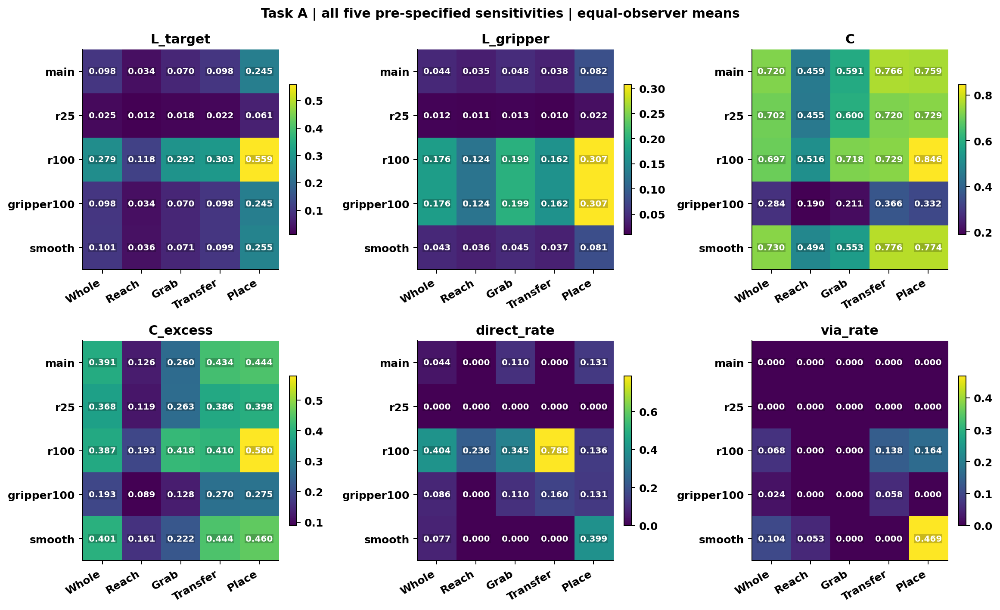
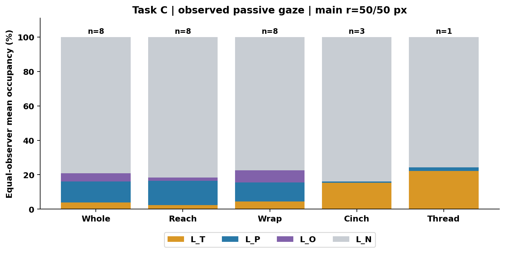
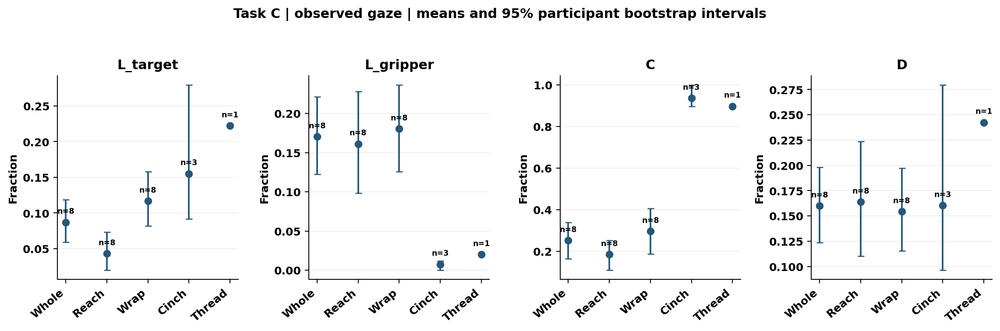
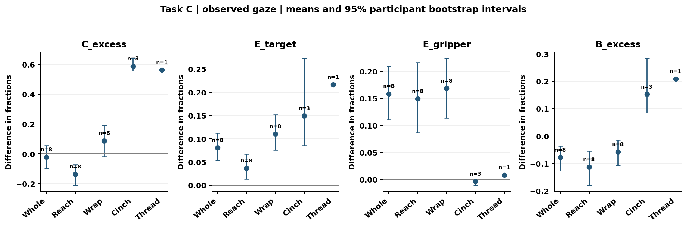
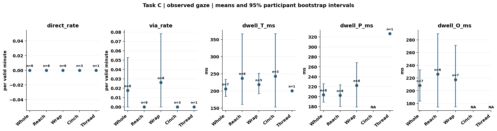
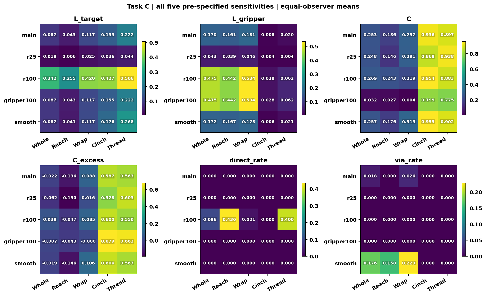
L_T+L_P+L_O+L_N=1；L_target=L_T+L_O；L_gripper=L_P+L_O；D=L_T+L_P；C=L_T/D；B=L_T−L_P。面积同样分为a_T/a_P/a_O/a_N；C_U=a_T/(a_T+a_P)；C_excess=C−C_U；E_target=L_target−a_T−a_O；E_gripper=L_gripper−a_P−a_O；B_excess=L_T−L_P−a_T+a_P。零分母为NA并保留原因，C不可估不影响其他指标。
每观看记录内原生dt加权；观察者内有效记录等权平均；组内观察者等权平均。各指标独立保存人数和有效观看次数。Bootstrap沿用ParticipantBootstrap、10000次、seed=42及SeedSequence([42,n])，参与者有放回抽样，2.5/97.5百分位；不足2名可估观察者不生成均值区间，defined/undefined均为0表示未运行。无新增p值、置换、t检验或BH/FDR。
每个观看以完整clip键和带hash的唯一输出ID表示。stage/target/DLC仅来自JSON指定路径；缺失字串nan/null/none不当文件路径。stage与target可同NPY，读取的只是相应标注字段，从未读取该文件的gaze坐标作观看者gaze，也不使用源gaze有效性。双侧DLC局部索引由保留source video_ts的Frame_Number映射验证。
真实gaze只从gaze_npy_path取gaze_x/gaze_y，两个坐标有限并在闭区间[0,1]，0/1保留；valid及原始Status不筛选。target和DLC采用半开图像边界。历史构造曾把超界原始坐标裁到端点，本次严格分析现存NPY，不反向剔除或恢复原坐标。已验证媒体尺寸和三个抽样位置的源/passive图像几何一致；不新增左右并排折叠、裁剪或比例变换。
| recording | rows | constructor_exact | raw_VID_FRAME_different | delta_min | delta_max |
|---|---|---|---|---|---|
| User1_4_User11_2_1 | 9365 | True | 7543 | -1 | 5 |
| User1_6_User9_5_2 | 5436 | True | 5427 | -412 | 34 |
| User2_2_User11_3_1 | 10442 | True | 10416 | -34 | 0 |
| User2_6_User12_3_1 | 12916 | True | 10277 | -1 | 4 |
| User3_2_User6_3_1 | 13808 | True | 13800 | -561 | 2 |
| User3_4_User12_5_2 | 11550 | True | 9453 | -1 | 5 |
| User6_2_User1_3_1 | 18001 | True | 17822 | -2 | 94 |
| User6_6_User2_2_1 | 6878 | True | 6572 | -2 | 55 |
| User8_4_User10_1_1 | 17081 | True | 17046 | -1 | 303 |
| User8_6_User5_3_1 | 2741 | True | 2591 | -1 | 36 |
| User9_2_User8_6_1 | 20137 | True | 20129 | -397 | 69 |
| User9_6_User5_2_1 | 14729 | True | 14441 | -27 | 1 |
| User10_2_User7_1_1 | 18525 | True | 18389 | -13 | 11 |
| User10_4_User2_2_2 | 3898 | True | 3794 | -18 | 0 |
| User12_2_User7_3_1 | 24811 | True | 24734 | -603 | 102 |
| User12_6_User9_2_1 | 14705 | True | 14703 | -128 | 0 |
此表的差值为原始VID_FRAME减NPY局部行号，二者不可混作同一计数器。所有原始NPY行和原帧、stage/target行、DLC行及原始眼动样本行索引保存在frames与mapping_frames，保证追溯。overlays显示存储映射下的空间关系，不作为现场显示同步证据。
JSON未提供passive观看者本人、与基准语义一致的成绩/完成状态及练习轮次；因此成绩相关、leave-one-out、participant_round_summary和1→3/1→2/2→3变化不适用。源操作者成绩、技能和seq均未替代这些信息。
代表性基准回归先行：4条原始录像、5条件、100阶段行、227015帧状态及4900项标量复现。独立验证重新读取原始passive NPY和链接标注，验证有效帧、占用、smooth、时间序列、层级平均和bootstrap。数值与原帧数据检查的状态，与未独立建立的物理播放/外部屏幕映射明确分开，不将后者标为通过。
已删除模型预测输入、K样本、概率MC、decoder、paired_test、模型误差/比较/排名、Brier/BSS和混淆矩阵，不拟合center/train参照，不输出GT_smoothed评价诊断；保留uniform area解释和smooth敏感性。本次复现的是“删除模型评测后的Target Locking v3真实gaze分析”。